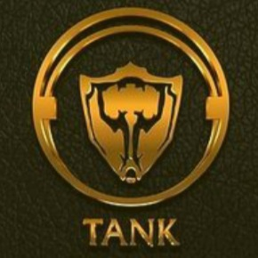
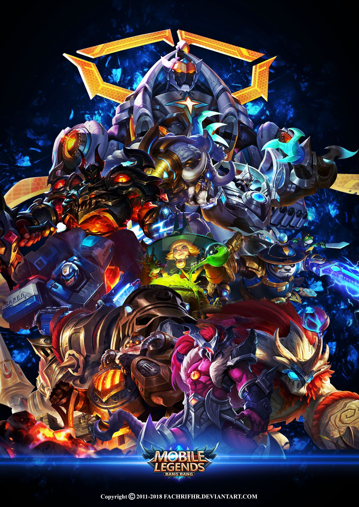

What are Tanks?

Tanks are often described as those heroes that are used as durable frontliners in the whole duration of the game. In a basic sense, tanks are the ones that roam around the map to initiate teamfights while defending their allies at the same time.
Getting into a more technical viewpoint, however, tanks have lots of other usages besides just preventing their allies from taking in too much damage from enemy attacks. Some tanks are specially good at initiating teamfights with their skillsets that prioritize crowwd control. Some are capable of dealing sustained amount of damage while being durable enough to still be at the teams frontline. Some of the others also have the 'Taunt' effect in their abilities which allow them to be the focus of the enemy attacks, instead of their allies. These are only some of the special skills that tanks have. We are going to talk about these more deeply in the other sections of this guide.
Tanks heroes are the most durable among all in mobile legends. These front-line giants help in attacking enemies. They're usually found leading the charge, choosing the right times and situations to initiate aggression. Many tanks can also protect their more fragile teammates by stunning or pushing around dangerous foes and limiting their damage potential. In mobile legends, most classes of heroes are really versatile in terms of abilities and with the item crafting variations a "tank" can be played as a DPS if you choose the right equipment. Usually, tanks are laning on the gold lane with their makrsman and roaming around the map to assist their other teammates when given the opportunity. Tank has high defense and hit point, but low damage. When used properly, a tank could be the strongest hero in the game that carries its teammates by properly attending the teamfights and assisting its allies at all times needed.
Just like any other roles, tanks can be classified by the role classifications. Some are pure tanks, while some have their tank role as their primary or secondary role.
Pure tanks include Hylos, Johnson, Grock, Gloo, Baxia, Uranus, and Belerick. These heroes have no other ther roles besides their Tank role.
Heroes with the primary Tank role include Franco, Gatotkaca, Akai, Tigreal, and Barats. These heroes are primarily Tanks, but have an additional role due to the nature of their skill sets.
Heroes with the secondary Tank role incude Ruby, Alice, Lolita, Masha, Esmeralda, and Hilda. These heroes have another role that is more evident and used than their secondary Tank role.
Going on to our next section, let us talk about how these tanks are usually used during in-game matches.
What do Tanks do?

The tanks that are often used as roamers priortize their crowd control skills to effectively initiate teamfights that are advantageous to their team. These tanks are durable enough tio stay at the frontlines while waiting for the perfect opportunity to unleash their skills. This type of tanks include Tigreal, Grock, Belerick, Minotaur, Atlas, Khufra, and Lolita.
Some of the otehr tanks are also usually used as the team's jungler or experience laner due to their damage capbility. These tanks are able to deal sustained damage to the enemies while tanking the enemy attacks for an extended period of time. They are usually hard to deal with due to their very tanky nature which could also be complemented by lifesteal or health regeneration skills. This type of tanks include Hylos, Alice, Ruby, Uranus, Gloo, Fredrinn, Gatotkaca, Barats, Akai, and Esmeralda.
There are also tanks that can easily roam the map because they are equipped with mobility skills that they can use all around the map. Using these mobility skills, they can easily wait for a teamfight to occur and make a surprise entrance, quickly initiate teamfight, or attack the enemy backlines. This type of tanks include Johnson, Baxia, Hilda, and Masha.
However, this classification is not always the case. With the flexibility of the item sets, the tanks that are usually used as the team's roamer can be used as the tank-built or sustained DPS jungler of the team. This would also work the otehr way around. This flexibility of certain tanks allows the team to confuse the enemies on who of the heroes are going to play the jungler, experience laner, and roamer roles in the team. This is specially effective for tanks like Akai, Barats, Gloo, Hilda, Gatotkaca, Fredrinn, Baxia, and Uranus, which are heroes that may be used in the three roles mentioned earlier. Taking advantage of this may be a key to victory of your team.
Some Special Abilities of Certain Tanks
Good Health Regeneration Abilities
Ruby's 'Let's Dance!' (Passive skill)
Ruby has 10% Physical Lifesteal of her own and inherits 115% Physical Lifesteal from Equipment. (Her Basic Attack enjoys no lifesteal effect.) After casting a skill, Ruby can dash to another place, gaining 9 (+1.8 x Hero Level) Physical Defense and Magic Defense for 4 seconds. This effect stacks up to 3 times and scales with level.
Alice's 'Blood Ode' (Ultimate Skill)
Alice enters the blood-draining state, continuously consuming 40-80 Mana and dealing 120-160 (+50% Total Magic Power) Magic Damage to surrounding enemies every 0.5 seconds. She also recovers 60-80 (+20% Total Magic Power) HP each time she damages an enemy (50% of this amount for non-hero enemies. The blood-draining state lasts until Alice runs out of Mana or the skill is cast again.
Uranus' 'Radiance' (Passive Skill) and 'Consecration' (Ultimate Skill)
Uranus absorbs the energy generated by attacks made against him to strengthen himself, regenerating 3-14 HP per second for each stack, over 10 seconds. This effect can be stacked up to 20 times.
Uranus unleashes energy stored within his body to remove slow effects on himself and restore 200-400 HP immediately, while increasing Movement Speed by 60% for 8 seconds. (The speed gained decays over time.) Uranus directly acquires 5-15 stacks of Radiance, increasing 20%-30% of his shield received and HP Regen for 8 seconds.
Hilda's 'Blessing of Wilderness' (Passive Skill)
Hilda regenerates 2% of her Max HP every second while staying in a bush. When entering a bush, Hilda gains a shield equal to 15% of her Max HP. After leaving the bush, the shield lasts for 5 seconds. This effect has a 10 seconds cooldown.
High Mobility
Johnson's 'Rapid Touchdown' (Ultimate skill)
Passive: Johnson permanently increases his Physical Defense by 10% / 20% / 30%.
Active: Johnson transforms into a car, slowly accelerating and during this period, 1 ally can be brought along with Johnson to ride in the car. After 2 seconds, Johnson will then accelerate forward. Johnson can also tap the skill Throttle to immediately accelerate forward.
While driving, Johnson is immune to Crowd Control. Johnson can tap the skill Brake to stop the car immediately.
Upon hitting an enemy hero or an obstacle, Johnson will crash, dealing 300 / 400 / 500 (+160% Total Magic Power) - 700 / 875 / 1050 (+280% Total Magic Power) Magic Damage to enemies in the area, stunning nearby enemies for 0.5 - 1 second (Damage and stun duration scales with speed and distance traveled), and electrifying the crashing site for 4 seconds, slowing enemies and continuously dealing 80 / 100 / 120 (+20% Total Magic Power) Magic Damage to enemies in the crashing site. Enemies can be electrified up to 9 times and take a maximum of 720 / 900 / 1080 (+1080% Total Magic Power) Magic Damage.
Minions and creeps will be knocked up and take 400 / 500 / 600 (+160% Total Magic Power) Magic Damage when Johnson passes through them.
Hold the Nitrous skill to increase speed, for up to 5 seconds. When he starts driving, Johnson's location is revealed and made visible for 3 seconds.
Unique Suppression Effect
Franco's 'Bloody Hunt' (Ultimate skill)
Franco suppresses a designated enemy unit for 1.8 seconds, and then hacks them for 6 times continuously, dealing 50-70 (+70% Total Physical Attack) Physical Damage with each hack.
Suppressed: A state that prevents a target from moving, attacking, or using skills. This is an advanced stunning effect that interrupts all skills, ignores resilience, and can't be removed.
Unique Shield Against Projectiles
Lolita's 'Guardian's Bulwark' (Second skill)
Lolita raises her shield to block all incoming ranged Basic Attack and Projectile for 3 seconds.
Use again: Lolita launches an Energy Blast that explodes upon hitting an enemy unit, dealing 300 / 340 / 380 / 420 / 460 / 500 (+50% Physical Attack) Physical Damage in a cone-shaped area.
Each instance of damage blocked by this shield increases the damage of the Energy Blast by 35%, up to a maximum of 210% damage increase.
Unique "Give-and-Take" of Shield Mechanic
Esmeralda's 'Starmoon Casket' (Passive Skill) and 'Frostmoon Shield' (First Skill)
Esmeralda manipulates Stardust and Frostmoon. Each of her Basic Attack and skills deal damages twice - Stardust deals Physical Damage, and Frostmoon deals Magic Damage and gives the target a shield equal to 135% of Frostmoon's damage dealt. The damage dealt by Esmeralda ignores all shield effects and transforms her Shield into her HP at the same time.
Esmeralda gains 400-850 (+150% Total Magic Power) shield and 40% Movement Speed which rapidly decays over its duration for 4 seconds. Meanwhile, she gradually transforms the shields of her nearby enemies into her own shield, capped at 50% of her Max HP.
Though there are more abilities of tank heroes worthy of being classified as unique and special, I am unable to cover them all in here. Hopefully, I would have some spare time in the future which would let me finish this work. Regardless, that is all about the tanks!!